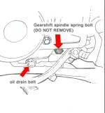

Drain and filter bolts screw into soft aluminium. Many are over-tightened, so they become very hard to undo, and a stripped thread is a bad repair. On many bikes there is not enough metal around the hole for a thread repair kit.
Safety
- Hot oil burns. Let the engine cool a little.
- Use a socket that fits well. A rounded bolt head is hard to undo.
Before you remove it
- Check that you have the correct bolt. On some engines with a side drain bolt there is a gearshift spring bolt nearby. Do not remove the gearshift spring bolt. Putting it back means taking the engine out of the frame. The manual shows which is which.
- Some engines have two drain bolts. Drain both if the manual says so.
- Look at the plug. Some carry a magnet for steel particles. Some plugs have an Allen socket head with a flange. Depending on the design these can be strong or weak, so use a good-fitting key and do not over-tighten.
Steps to refit
- Clean the plug and the hole. Fit a new washer or O-ring.
- Look up the tightening torque in the manual. Use a torque wrench.
- If the manual has no torque for the filter bolt, measure the bolt size and use a standard torque chart for that size.
- Tighten to the value. Do not add extra.
- A bolt that is stuck from over-tightening may need a reinforced socket. A stripped hole needs a larger bolt, an expanding plug or an insert, and may need a workshop.
Check your work
- No oil seeps after the engine has run.
- The bolt did not turn past the torque value.